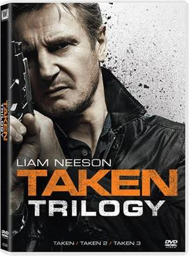
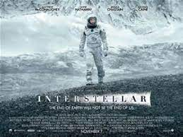

Interstellar is a 2014 epic science fiction film co-written, directed and produced by Christopher Nolan. It stars Matthew McConaughey, Anne Hathaway, Jessica Chastain, Bill Irwin, Ellen Burstyn, Matt Damon, and Michael Caine. Set in a dystopian future where humanity is struggling to survive, the film follows a group of astronauts who travel through a wormhole near Saturn in search of a new home for mankind.
Taken (also titled 96 Hours and The Hostage) is a 2008 French English-language action-thriller film written by Luc Besson and Robert Mark Kamen, and directed by Pierre Morel. It stars Liam Neeson, Maggie Grace, Famke Janssen, Katie Cassidy, Leland Orser, and Holly Valance. Neeson plays Bryan Mills, an ex-CIA Agent who sets about tracking down his teenage daughter Kim (Grace) and her best friend Amanda (Cassidy) after the two girls are kidnapped by Albanian human traffickers while traveling in France during a vacation.
Wonder Woman 1984 is a 2020 American superhero film based on the DC Comics character Wonder Woman. Produced by Warner Bros. Pictures, Atlas Entertainment and The Stone Quarry, and distributed by Warner Bros. Pictures, it is the sequel to 2017's Wonder Woman and the ninth film in the DC Extended Universe (DCEU). Directed by Patty Jenkins and written by Jenkins, Geoff Johns and Dave Callaham from a story by Johns and Jenkins, it stars Gal Gadot as Diana Prince / Wonder Woman, alongside Chris Pine, Kristen Wiig, Pedro Pascal, Robin Wright and Connie Nielsen. Set in 1984 during the Cold War, the film follows Diana and her past love Steve Trevor as they face off against Maxwell Lord and Cheetah.